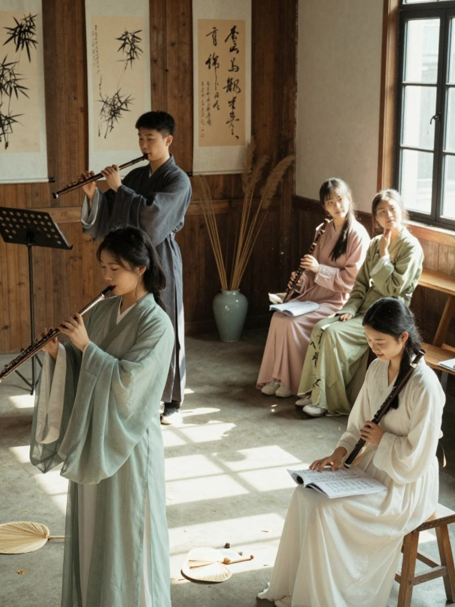

欢迎来到长笛社招新主页
社团简介
活动安排
风采展示
社员故事
在线报名
社团简介
长笛社团以银白笛身为媒、以悠扬乐声为桥，秉持“以笛传音，以乐育人”的理念，为所有热爱管乐的同学搭建起一个零基础可入门、系统化能成长、多舞台可展示的艺术平台，让不同基础的爱好者都能在笛声里找到归属感。
零基础友好的成长体系
教学完全贴合初学者节奏，不设过高门槛。入门阶段从乐器认知、持握姿势和呼吸方法讲起，用趣味节奏游戏化解枯燥乐理；进阶后加入指法、音阶和童谣流行曲练习，老师针对气息与口型做一对一指导；掌握基础后开设合奏课程，从二声部配合到多声部编排，让大家在集体演奏中建立乐感与表现力。
温暖互助的社团氛围
社团形成了“新老帮扶、共同成长”的传统，每位新成员都会匹配一位学长姐作为专属伙伴，从指法纠错到声部配合倾囊相授。日常活动从不枯燥：天好时去草坪合奏，课后围坐分享新练的曲子，节日里办轻松的小型音乐派对，让社团成为校园里一个有松弛感的音乐小港湾。
丰富多元的展示舞台
每学期设置分层级展示机会：新人先参加内部小型汇报演出，完成人生第一次公开演奏；有基础的成员登上市级校园文化节、艺术节舞台；能力突出的成员由社团推荐参与各级器乐独奏与重奏赛事。一次次舞台打磨，让大家从紧张到指尖发抖，慢慢变成能从容站上赛场中央的演奏者――长笛带来的不只是技巧，更是从容发光的自信。
以乐为伴的成长意义
学长笛的意义从来不止“学会一门乐器”。长音练习磨出专注与耐心，合奏排练教会倾听与协作，而完整吹出一首喜欢的曲子，本身就是释放压力、安放情绪的出口。至今社团已走出数百位长笛爱好者，有人把它当成陪伴一生的爱好，有人带着这份音乐素养走进专业艺术院校，更多人把收获的自信、专注和对美的感知带进了日常生活。
如果你也喜欢清亮悠扬的笛声，想拥有一个能安心沉浸在音乐里的小天地，欢迎加入长笛社团。不必担心零基础，只要你带着一份热爱，我们就可以一起从第一个音符开始，吹出属于你的青春乐章。
活动安排
为了让大家更好地了解长笛社的日常，本学期计划安排如下几项主要活动。具体时间可能会根据学校统一安排略作调整，详情请关注社团通知。
| 长笛社 2026 年春季学期活动安排表 |
| 活动名称 |
活动时间 |
活动地点 |
负责人 |
| 新成员见面会 |
9月第2周周五晚 |
学生活动中心 器乐教室302 |
林晓 |
| 长笛基础教学公开课 |
9月第3周周六下午 |
陈悦 |
| 校园草坪笛音会 |
10月第2周周日 |
银杏林东侧草坪 |
周航 |
| 期末长笛专场音乐会 |
12月第1周周六晚 |
大学生活动中心 大礼堂 |
刘清 |
上表仅列出了部分代表性活动，日常还会有小型即兴合奏、演奏经验分享等活动，欢迎有想法、有创意的同学参与策划。
整个学期的活动完全贴合“零基础入门―能力进阶―舞台实践―交流成长”的路径设计，零基础新生可以从见面会和公开课开始，一步步掌握长笛基础技巧，有基础的老生也能在草坪笛音会、期末专场里打磨重奏配合能力，所有人都能在松弛的节奏里感受到长笛演奏的乐趣。
风采展示
在校园的艺术版图里，长笛社团始终是一道流动着银亮色旋律的独特风景。从排练室里此起彼伏的长音练习，到舞台上聚光灯下的清亮合奏，一届届社员带着对管乐的热爱，把日常的坚持、舞台的闪光和独属于长笛的浪漫，一点点拼成了社团鲜活又生动的模样。
日常练习风采区
社团的风采，首先藏在每一个日常练习的细节里。推开排练室的门，永远能看到不同阶段的社员各自沉浸在自己的旋律里：刚入社的新生对着镜子反复调整口型，指尖还带着一点生涩，却认真地把每一个长音吹得平稳扎实；有基础的老生凑在一起拆分重奏的声部，你一句我一句地磨合衔接的细节，偶尔吹错了小节就笑着停下来重新来过。社团的角落永远放着一个共享谱架，上面贴满了社员们自己标注的演奏笔记，有人用彩色笔圈出了气息停顿的节点，有人在空白处写下了自己摸索出来的指法小技巧，这些带着温度的痕迹，都是社团最鲜活的日常注脚。

图中是长笛社社员排练演奏场景。平时的训练与排练，都会在正式演出中得到充分的展示机会。
宣传视频示例